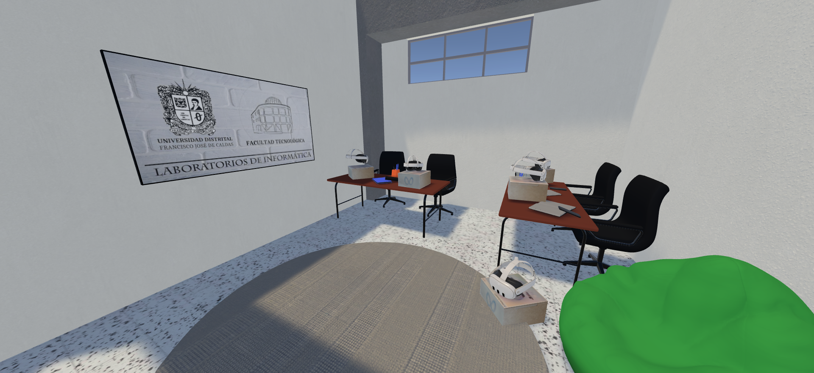
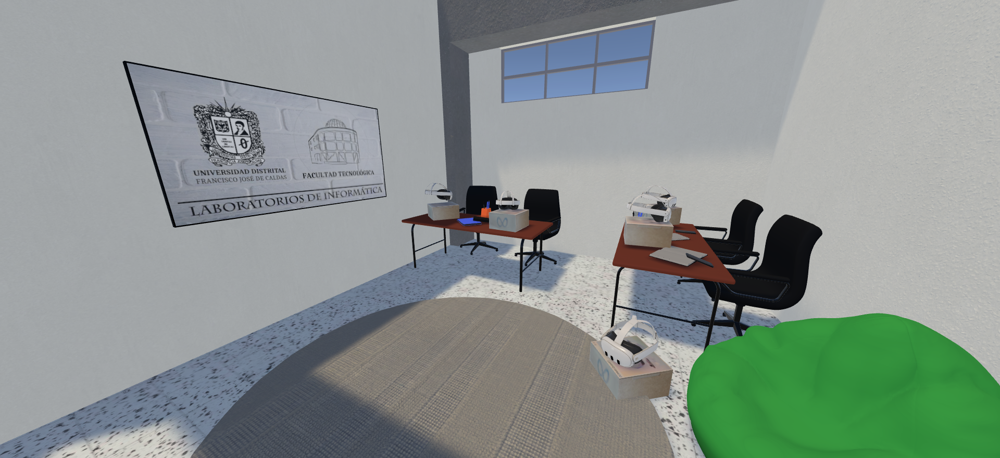

I. Análisis Comparativo del Espacio
La siguiente herramienta de comparación visual permite analizar las mejoras implementadas en el espacio destinado a tecnologías de realidad virtual y mixta. Deslice el control central para observar las diferencias entre el estado inicial y el resultado de la intervención.

II. Zona Izquierda — Realidad Virtual (VR)
Descripción
En esta sección se observan equipos de cómputo de alto rendimiento, visores VR, sensores de movimiento y un área despejada para la movilidad del usuario. Está diseñada para experiencias completamente inmersivas que desconectan al usuario del entorno físico y lo sumergen en un espacio virtual tridimensional.
Actividades a Desarrollar
1. Simulaciones de entornos complejos
- Prácticas en entornos industriales, urbanos o naturales.
- Capacitación en manejo de maquinaria o drones.
- Entrenamiento en procedimientos de emergencia o seguridad.
2. Desarrollo y prueba de experiencias VR
- Prototipado de aplicaciones interactivas.
- Experimentación con motores gráficos (Unity, Unreal Engine).
- Validación de interfaces inmersivas para proyectos de ingeniería y diseño.
3. Investigación cognitiva y de experiencia de usuario
- Estudios de percepción espacial y adaptación sensorial.
- Medición de desempeño y concentración en ambientes virtuales.
4. Proyectos interdisciplinarios
- Creación de experiencias narrativas o turísticas en 360°.
- Reconstrucciones virtuales de espacios culturales o históricos.
Beneficios
- Fortalece la capacidad de visualización espacial y resolución de problemas.
- Facilita el aprendizaje experiencial sin riesgos físicos.
- Genera nuevas oportunidades de investigación aplicada en ingeniería, educación y diseño digital.
III. Zona Derecha — Realidad Mixta (MR)
Descripción
El área de la derecha incorpora dispositivos de realidad mixta (HoloLens, tablets, proyectores interactivos) sobre estaciones de trabajo colaborativas. Permite la integración entre el mundo físico y los modelos digitales, favoreciendo la visualización de datos, objetos 3D o procesos en tiempo real.
Actividades a Desarrollar
1. Visualización de proyectos técnicos en 3D
- Modelos estructurales, eléctricos o de redes de telecomunicaciones superpuestos en el entorno real.
- Revisión colaborativa de prototipos con anotaciones virtuales.
2. Intervenciones de mantenimiento o diseño asistido
- Guías paso a paso proyectadas en tiempo real.
- Diagnóstico aumentado para prácticas de ingeniería o electrónica.
3. Desarrollo de herramientas educativas interactivas
- Experimentos de física, biología o tecnología mediante visualización aumentada.
- Aplicaciones que combinen realidad física con simulaciones digitales.
4. Evaluación colaborativa de proyectos interdisciplinarios
- Integración con carreras de diseño industrial, ingeniería catastral, electrónica y telemática.
- Trabajo conjunto en ambientes híbridos donde los modelos digitales se manipulan colectivamente.
Beneficios
- Fomenta el aprendizaje activo y colaborativo.
- Reduce los errores de diseño al visualizar los resultados antes de la implementación real.
- Amplía el alcance de las simulaciones, conectando la virtualidad con el entorno físico.
IV. Impacto General del Espacio
Este pasillo, antes concebido como un área de descanso, se transforma ahora en un laboratorio de experimentación abierta, que sirve como punto de conexión entre tecnología, creatividad y aprendizaje.
Para la comunidad universitaria: se convierte en un espacio accesible para exploración, innovación y colaboración.
Para los programas de Ingeniería Telemática y Sistematización de Datos: actúa como una extensión práctica donde los estudiantes pueden validar algoritmos, redes o aplicaciones inmersivas.
Para el entorno social: ofrece un ejemplo de cómo los espacios de paso pueden reimaginarse como zonas de interacción tecnológica y desarrollo interdisciplinario.
V. Inventario de Equipamiento y Especificaciones Técnicas
A continuación se presenta un inventario detallado de los componentes que conforman el espacio de Realidad Virtual (RV) y Realidad Mixta (RM), incluyendo las especificaciones técnicas recomendadas para cada elemento.
| Componente | Especificaciones Técnicas y Observaciones |
|---|---|
| Computador(es) de Alta Gama (para RV) | Procesador Intel Core i7/i9 o AMD Ryzen 7/9; GPU NVIDIA RTX 3070/4070 o superior; mínimo 16 GB RAM (preferiblemente 32 GB); SSD NVMe de 1TB; fuente certificada y refrigeración adecuada. |
| Monitor(es) de Escritorio | Monitor de al menos 24 pulgadas para visualización de contenido y monitoreo de experiencias inmersivas. |
| Gafas de Realidad Virtual (VR) | Meta Quest 2/3, Valve Index, HTC Vive Pro 2 o Pimax, con cables de conexión adecuados (USB-C, DisplayPort, etc.). |
| Estaciones Base/Sensores | 2-4 estaciones base y soportes de montaje para seguimiento preciso (según modelo de RV). |
| Mandos de Realidad Virtual | Controladores asociados a las gafas (Quest, Valve Index, entre otros). |
| Soporte(s) para Gafas y Mandos | Estaciones de carga o soportes para organización y almacenamiento. |
| Cableado y Accesorios | Cables HDMI/DisplayPort, USB 3.0/3.1, extensiones de corriente y regletas con protección contra sobretensión. |
| Colchoneta o Alfombra Delimitadora | Material antideslizante para delimitar el área segura de movimiento durante experiencias inmersivas. |
| Escritorio/Mesa de Computador | Mesa robusta para soportar PC, monitor y periféricos asociados. |
| Silla Ergonómica | Silla ergonómica para el operador o usuario del sistema. |
| Mesa Perpendicular (con gafas adicionales) | Mesa de soporte para almacenar o exhibir distintos modelos de gafas VR. |
| Tablets o Dispositivos de Realidad Mixta | iPad Pro, Galaxy Tab S, Surface Pro, o dispositivos especializados como HoloLens 2 o Magic Leap 2. |
| Soporte(s) para Tablets | Bases ajustables para mantener dispositivos en posición vertical. |
| Estaciones de Carga para Tablets | Sistema de carga múltiple con cables y adaptadores correspondientes. |
| Computador(es) de Alta Gama (para RM) | Especificaciones similares a los equipos de RV para tareas de desarrollo o visualización avanzada. |
| Sillas de Oficina Ergonómicas | Sillas ergonómicas para usuarios de la zona de simulación y realidad mixta. |
| Cableado y Accesorios (generales) | Regletas, extensiones y cables USB para periféricos o carga de dispositivos. |
Nota: Las especificaciones son orientativas y sujetas a actualización según los avances tecnológicos y las necesidades institucionales.
Laboratorio de Simulaciones y Realidad Virtual
Este espacio ha sido diseñado como un laboratorio especializado para simulaciones avanzadas y desarrollo de aplicaciones de realidad virtual que requieren alta potencia de cómputo. Utilice los botones para explorar las diferentes vistas de configuración del laboratorio.
Estado inicial del Laboratorio de Simulaciones
Características del Espacio
Este laboratorio se configura como un centro de I+D, priorizando la flexibilidad del espacio y la capacidad de las estaciones para manejar tareas exigentes como renderizado, física avanzada y procesamiento de datos en tiempo real.
Usos por Configuración (Vistas)
- Vista 1 (Colaborativa y almacenamiento):Facilita las sesiones de programación en pareja o en grupo, con acceso inmediato a la estantería de equipos y recursos de apoyo.
- Vista 2 (Visualización y Prototipado):Permite utilizar la gran ventana como fuente de luz controlada para pruebas de RV y usar la pizarra para diagramas complejos o proyección de interfaces.
- Vista 3 (Alta Densidad Individual):Optimiza el número de usuarios que pueden trabajar simultáneamente en proyectos que demandan un PC por persona, como asignaturas prácticas de diseño 3D y simulaciones.
Equipamiento y Servicios Clave
- Estaciones de trabajo con procesadores y GPUs de alto rendimiento.
- Área de movimiento libre delimitada (alfombra) para experiencias de RV a escala.
- Almacenamiento modular y señalizado para visores, mandos y sensores.
Beneficios
- Garantiza la infraestructura necesaria para desarrollar proyectos de ingeniería inmersiva y gemelos digitales.
- Permite la validación de diseños y la experimentación en entornos controlados y seguros.
- Fomenta la colaboración avanzada en proyectos de fin de carrera y grupos de investigación.
Salón de Visualización - Terraza
La terraza se transforma en un espacio versátil y luminoso para presentación, co-creación y visualización informal de datos y modelos. Utilice los botones para explorar las diferentes vistas de configuración del salón.
 


Estado inicial del Salón de Visualización en Terraza
Características del Espacio
El diseño prioriza el uso de dispositivos portátiles y el mobiliario flexible. Es un punto de encuentro que aprovecha el entorno exterior para generar ambientes de trabajo menos formales, ideales para la creatividad y el intercambio de ideas.
Usos por Configuración (Vistas)
- Vista 1 (Reuniones Informales): Mesas pequeñas y visores portátiles que fomentan la interacción y la revisión rápida de prototipos entre grupos de trabajo.
- Vista 2 (Área de Presentación):El mobiliario cómodo permite sesiones de pitching o feedback de proyectos, usando la pared de la Facultad como fondo institucional para las presentaciones.
- Vista 3 (Modular para Inmersión):Facilita la creación de pequeñas zonas de inmersión para que varios usuarios prueben simulaciones breves de forma individual o en pareja.
Infraestructura Clave
- Mobiliario ligero y reconfigurable para adaptarse a distintos tamaños de grupo.
- Visores VR autónomos (sin necesidad de PC) para máxima portabilidad y uso en exteriores.
- Espacios abiertos que reducen la fatiga visual y facilitan el descanso activo.
Beneficios
- Promueve la innovación abierta y la integración de estudiantes y profesores de diferentes disciplinas.
- Ofrece un ambiente de trabajo flexible que se adapta a las metodologías ágiles y creativas.
- Funciona como vitrina tecnológica, mejorando la imagen institucional ante visitantes y la comunidad.
Mejores Accesorios para Meta Quest 3
Para maximizar la experiencia en el laboratorio y prolongar la vida útil de los equipos, se han seleccionado los mejores accesorios disponibles en el mercado. Los enlaces dirigen a Amazon, que ofrece la mayor variedad y, generalmente, envío gratis a Colombia por compras superiores a $35 USD (aprox. 150.000 COP).
Cable de alta velocidad compatible con PCVR. Esencial para conectar las gafas a los equipos de cómputo del laboratorio y ejecutar simulaciones pesadas sin latencia.
Ver Precio (Amazon)Almohadilla facial reemplazable fabricada en material suave "Ice Silk" y cuero. Fundamental para la higiene en laboratorios compartidos, ya que es fresca y fácil de limpiar.
Ver Precio (Amazon)Correa ergonómica estilo "Halo" con ajuste de perilla. Distribuye el peso de las gafas de manera uniforme alrededor de la cabeza, eliminando la presión facial para sesiones largas.
Ver Precio (Amazon)Protección completa para los mandos táctiles. Incluye correa ajustable para los nudillos que permite soltar el control sin que se caiga, aumentando la inmersión y seguridad.
Ver Precio (Amazon)Aplicaciones Recomendadas para VR/MR
Selección de software educativo, creativo y de simulación para aprovechar al máximo las capacidades del laboratorio.
App de física donde los usuarios pueden experimentar con conceptos de gravedad, fuerzas y dinámicas físicas a través de puzzles.

Permite visualizar sistemas anatómicos en 3D para educación médica o biológica.
Experiencias de aprendizaje de idiomas + cultura mediante tours en realidad virtual por sitios icónicos.
Un recorrido por el sistema solar en miniatura; ideal para astronomía o educación básica científica.
Juego de física y mecánica donde construirás máquinas de reacciones en cadena; útil para lógica, diseño mecánico y creatividad.
App de matemáticas que permite visualizar modelos 3D y resolver problemas estructurales para entender álgebra, geometría y más.
Herramienta para crear y manipular objetos geométricos en 3D; ideal para clases de matemática y geometría espacial.
Juego educativo para aprender programación: lógica, estructuras de datos, loops, con inmersión y ejercicios interactivos.
Simulación acuática: explorar hábitats marinos (animales, ecosistemas) + modo educativo con puntos de información.
Sandbox musical en VR/MR: tocar instrumentos en un escenario inmersivo; ideal para música, arte e interacción creativa.
Herramienta de diseño para modelado 3D, arquitectura y diseño colaborativo en VR/MR.